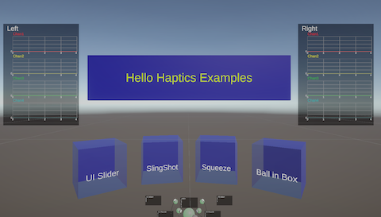
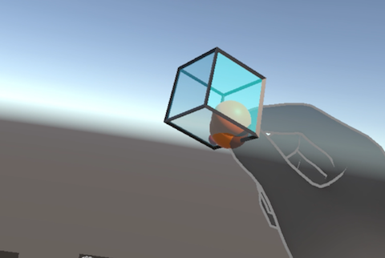

5. Sample scenes
Sample scenes are provided that allows you to quickly experience the FF-SDK functionality and use it as a reference during development.
5.1. Sample scenes list
The following sample scenes are available at Assets/Commissure/HapticsSystem/Samples/HelloHaptics.
These scenes works on Meta Quest connected via Quest Link.
| Scene | Description | |
|---|---|---|
| HelloHaptics.unity | A scene that serves as an entry point to the other samples |  |
| Scenes/BallInBox.unity | Reproduce the sensation when shaking a box with a ball inside |  |
| Scenes/Slider.unity | Reproduce the sensation of operating a switch button |  |
| Scenes/SlingShot.unity | Reproduce the tension when pulling and releaseing a rubber band |  |
| Scenes/Squeeze.unity | Reproduce to crush an object |  |
Also, each sample has ToF AR version with the suffix "_TofAR" added to the scene name.
5.2. Setting up sameple scenes
- Follow 3.3 Setting up Meta XR SDK to create a Unity prpject applied Universal 3D template for Meta Quest.
- Follow 3.1 Setting up FF-SDK-Unity to set up FF-SDK.
- Import FF-SDK-Unity_Samples_vx.x.x.unitypackage.
- From the menu in the Unity Editor, open File / Build Settings, and add any sample scene to "Scenes in Build".